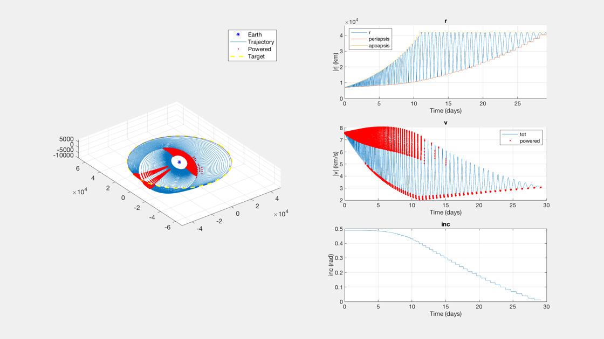
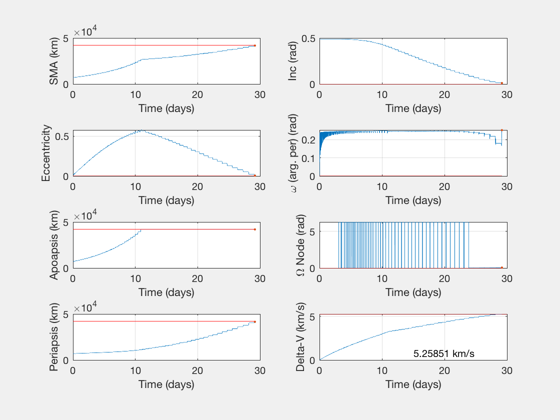

A non-impulsive burn demo
Assumes a constant, low acceleration. Shows the result (trajectory, delta-V) of a given input and output orbit and discretized burn policy. A burn policy is a time-dependent true anomaly arc over which apoapsis, eccentricity, and plane are corrected. Burn policy is discretized in time and interpolated linearly.
A test case. Simple. Fast. Unrealistic acceleration. Demonstration of IntegrateBurnPolicyContinuous and AccelFromPolicyContinuous
See also: IntegrateBurnPolicyContinuous, AccelFromPolicyContinuous, PlotTrajectoryContinuous, PlotDiagnosticContinuous
%-------------------------------------------------------------------------- % Copyright (c) 2019 Princeton Satellite Systems, Inc. % All rights reserved. %-------------------------------------------------------------------------- dSim = IntegrateBurnPolicyContinuous; % Simulation data struct dAccel = AccelFromPolicyContinuous; % Acceleration data struct % Do not report diagnostic quantities boolDiagnostic = false; % Initial and final orbits dSim.el0 = [7000 28*pi/180 0 0 0.01 0]; dSim.el1 = [42164 0 0 0 0 0]; dAccel.el1 = dSim.el1; % Simulation time dSim.tMax = 3.5e6; % Seconds dAccel.tMax = dSim.tMax; % Spacecraft parameters. If Isp is empty then accel is constant. dAccel.aMag = 1e-5; % Accel. km/s/s dAccel.Isp = []; % Isp, seconds % Discretized burn power angles, linear in time dAccel.ap = [180*pi/180]; % apoapsis correction, at periapsis. Constant in time. dAccel.per = [0 30*pi/180]; % Periapsis correction, at apoapsis. Increases linearly in time. dAccel.inc1 = [0 30*pi/180]; % Plane correction at node 1. Increases linearly in time. dAccel.inc2 = [0]; % Plane correction at node 2. Constant in time (and zero). a = @AccelFromPolicyContinuous; [x,t,out] = IntegrateBurnPolicyContinuous(dSim,a,dAccel,[],boolDiagnostic); PlotTrajectoryContinuous(x,t,dSim.el1); PlotElementsContinuous(x,t,dSim.el1); [tNum,~,tUnit] = TimeLabl(t(end)); fprintf('Time to reach elements is %.3g %ss. \n',tNum,tUnit); fprintf('Delta-V via the integrator is %.3g km/s. \n',max(x(7,:))); if boolDiagnostic PlotDiagnosticContinuous(x,t,out.asVec,dAccel); end if 0 save GEOTransferTraj x t out dAccel dSim end %--------------------------------------
ODE int percentage: 0. 10. 20. 30. 40. 50. 60. 70. 100. 9.22738 sec The ode solver picked 21117 points. All elements agree! Time to reach elements is 29.2 days. Delta-V via the integrator is 5.26 km/s. 